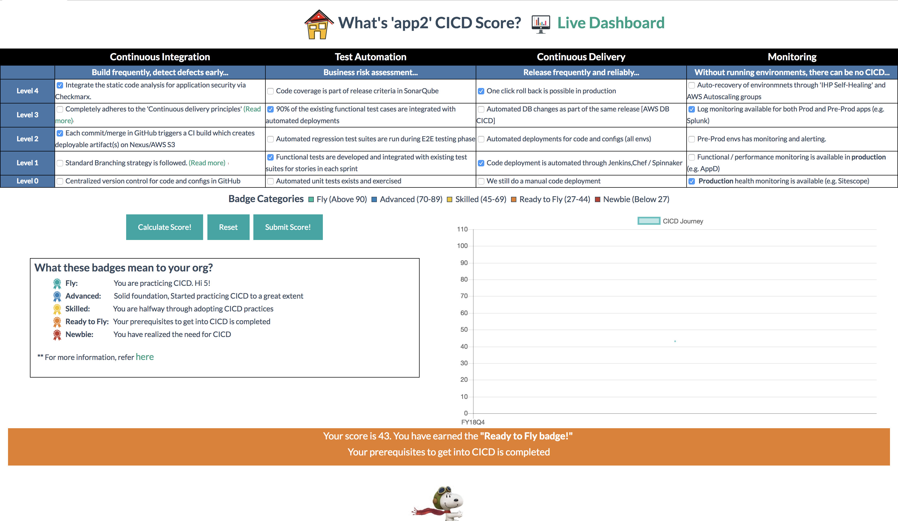
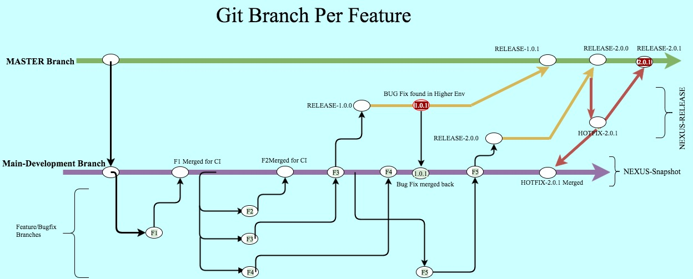

My CICD Score
As an organization how have we matured in our Continuous Integration & Continuous Delivery (CICD) practices has been a challenge in the past. This innovation is a framework that allows us to evaluate the CI/CD score for any application , which projects the scores in a journey line graph along with the qualifying badges.
Team members
Sahana BS, Debajit KatakiCustomer pain point
CICD adds Speed to our release cycles , hence , as an organization we think CICD first for any new app. However - we also have legacy apps, where it is more of a cultural mind shift than a technical challenge to adopt and practice CICD. Most of the time we don’t know what areas to target for to be really practicing CICD at scale. At the org level , how do we measure our overall CICD adoption and maturity has been a pain point.Customer benefit
Measurement removes subjectivity , and helps us to focus and strategize in an objective way. With this goal we started designing this assessment framework , which is very lightweight , and comprises of various industry standard CICD recommendations in the form of a checklist. This list can be used to gauge the maturity of our CICD competency and form a baseline for further improvements.Solution
The landing page is the CICD checklist , which we refresh on a regular basis allows us to evaluate the score for any given app. During the assessment the app team will earn points against each qualifying items, and the underlying engine derives a total score and awards a qualifying badge. There is also a live graph which tells about the journey-line of the app on how this application has been maturing over time in their CICD practices. The scores in the backend database for entire org is then used to display the score cards and respective badges via a QlikView dashboard , which gives direction and also builds a momentum creating a healthy Network Effect.Continuous Delivery Principles
Here are seven continuous delivery principles that make highly effective and efficient development and release cycles:
1. Small releases - smaller and multiple releases are usually better than one large one.
2. Code reviews - Many organizations use a hierarchal system for their reviews, which means more and more senior developers have to review the code before it’s approved. A peer-based system in which developers review each other leads to a faster and more efficient process
3. Build quality in - Take the time to invest in your quality metrics. A project with good, targeted quality metrics (we could be talking about unit test coverage, code styling, rules violations, complexity measurements – or preferably, all of the above) will invariably be better than one without, and easier to maintain in the long run.
4. Build only once → practice code promotion.
5. If anything fails, stop the line - Throw it away and start the process again, don’t patch, don’t hack. If a problem arises, no matter where, discard the deployment (i.e. rollback), fix the issue properly, check it in to source control and repeat the deployment process. This will be strictly followed in AWS deployments.
6. Version Control Everything - Not only the code , but also configs, property files. etc.
7. Everyone ( Dev, QE, Ops, RM , RE ) has responsibility for the release process.
Additional note on CI and CD:
Definition: Continuous Integration
Continuous Integration is a software development practice in which you build and unit-test software every time a developer checks in new code. This provides Agile software teams the rapid feedback they need to respond to market demands and eliminate problems quickly. Basically,- Automate the build
- Automatically test the code as often as possible for early detection of errors.
- Any feedback will come back sooner , before the code has left the mind of developer.
- Everyone can see what is happening.
Definition: Continuous Delivery
Continuous Delivery (CD) is a software development practice in which continuous integration, automated testing, and automated deployment capabilities allow high-quality software to be developed and deployed rapidly, reliably and repeatedly with minimal manual overhead.Definition: Continuous Deploymen
Continuous Deployment is a software development practice in which every code change goes through the entire pipeline and is put into production, automatically, resulting in many production deployments every day. With Continuous Delivery your software is always release-ready, yet the timing of when to push it into production is a business decision, and so the final deployment is a manual step. With Continuous Deployment, any updated working version of the application is automatically pushed to production. Continuous Deployment mandates Continuous Delivery, but the opposite is not required.Git branching strategy
So what exactly is a branch in Git? A branch in Git is simply a pointer to a commit. If you look at how a branch is represented in the '.git' directory, you'll find a textfile with the same name as the branch, simply containing the commit identifier of the current 'tip', or newest commit, on that branch. The branch itself is created by tracing the ancestry of that single commit, since every commit knows which commit it occurred after. As from the RARE team, we have been asked about what the 'right' Git branching strategy is. Our suggestion differs from team to team and situations but the following diagram gives an overall picture of the branching stratergy that can be
